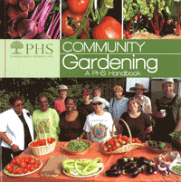

<body bgcolor="#FFFFFF" text="#000000" link="#0000FF" vlink="#CC0000" alink="#CC0000"><center><hr width="350" size="1" align="center" noshade>How to build a community garden for all to share<hr width="350" size="1" align="center" noshade><p><a href="https://cdcshoppingcart.uchicago.edu/Cart/ChicagoBook.aspx?ISBN=9780615401508&&PRESS=temple" target="_top">Buy this book!</a> | <a href="https://cdcshoppingcart.uchicago.edu/Cart/Cart.aspx?PRESS=temple" target="_top">View Cart</a> | <a href="https://cdcshoppingcart.uchicago.edu/Cart/Cart.aspx?PRESS=temple" target="_top">Check Out</a></p><p></p></center><!--none//--><h1>Community Gardening</h1>
<H2>A PHS Handbook</H2>
<h3>Pennsylvania Horticultural Society</h3>
<P>paper 0615401503 $22.95, Oct 11, <FONT COLOR=#990033>Out of Stock Unavailable</FONT>
<BR> 132 pp
8.5x8.5
</P><p>Community gardens unite neighbors and friends who plant and tend thriving gardens that provide fresh food and flowers but also fellowship. <i>Community Gardening</i>, by the experts at the Pennsylvania Horticultural Society, is an indispensible resource for budding and established gardeners who want to work together to transform patches of unused land into bountiful green spaces that nourish and inspire.
<p><i>Community Gardening</i> is full of practical information on everything from securing land for building a garden to working with local businesses and the wider community to sustaining a garden over many years. The full-color book features examples based on PHS's highly regarded Philadelphia Green program, as well as brief profiles of community gardens in other cities.
<p>Distributed by Temple University Press for the Pennsylvania Horticultural Society
<BR>&nbsp;<h2>Contents</h2><P>
<p>1. About Community Gardens
<br>2. Organizing a Community Gardening Group
<br>3. Planning Your Community Garden
<br>4. Plants, Tools & Tips
<br>5. Involving the Next Generation
<br>6. Conclusion, Resources & Index
</P><BR>&nbsp;<H2>About the Author(s)</H2>
<P><b>The Pennsylvania Horticultural Society (PHS)</b> is a nonprofit membership organization founded in 1827. PHS offers activities, workshops, and publications for gardeners at all levels. An established leader in community greening, PHS works with citizens, government agencies, businesses, and other organizations to plan, build, and sustain community green spaces. PHS produces the Philadelphia International Flower Show, the largest indoor flower show in the world, and proceeds from the show help support its programs.</P>
<BR><H2>Subject Categories</H2>
<p><A HREF="/tempress/philly.html" TARGET="_top">Philadelphia Region</a>
<BR><A HREF="/tempress/general.html" TARGET="_top">General Interest</a>
<BR><A HREF="/tempress/nature.html" TARGET="_top">Nature and the Environment</a>
</p>
<p align="center"><a href="https://cdcshoppingcart.uchicago.edu/Cart/ChicagoBook.aspx?ISBN=9780615401508&&PRESS=temple" target="_top">Buy this book!</a> | <a href="https://cdcshoppingcart.uchicago.edu/Cart/Cart.aspx?PRESS=temple" target="_top">View Cart</a> | <a href="https://cdcshoppingcart.uchicago.edu/Cart/Cart.aspx?PRESS=temple" target="_top">Check Out</a></p><p><font face="Arial" size="1"><a href="copyright.html" onMouseOver="window.status='Web Copyright Policy';return true;" onMouseOut="window.status=''" title="Web Copyright Policy">&copy;</a> 2015 <a href="http://www.temple.edu" target="new" onMouseOver="window.status='Link to Temple University home page';return true;" onMouseOut="window.status=''" title="Link to Temple University home page">Temple University</a>. All Rights Reserved. http://www.temple.edu/tempress/titles/2188_reg.html</font></p>